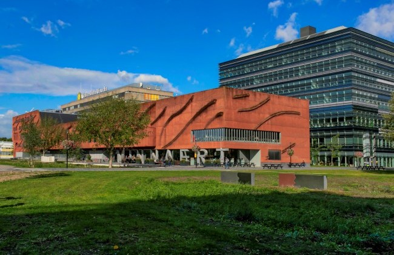

Location
The summer school will be held in the Buys Ballot Gebouw
(Buys Ballot Building) on the Utrecht Science Park, De
Uithof.
We will confirm the exact room numbers closer to the summer school
date.
Getting here
When traveling by public transportation from Utrecht Central Station
to the Uithof, you can take either bus 12 to bus stop Padualaan or bus
28/128 to bus stop Botanische Tuinen. At both stops, you should be
able to see the following buildings just beyond the bus stop.

(Picture credits: Pieter van Dorp van Vliet)
The Buys Ballot Gebouw is the large building with the large
Universiteit Utrecht logo on the roof.
Note that you cannot enter the building directly. You may need to
enter through the Minnaert building (the low red building in front of
the Buys Ballot Building) or the Koningsberger building (the glass
building to the right of the Buys Ballot Building).
Public transport
Although you can pay for your bus tickets on the bus, it might be a
good idea to purchase an OV chipkaart which lets you pay by
swiping your card. Fares are typically a bit cheaper when paid with
a chipkaart as opposed to cash on the bus. You can find more
information
about the OV chipkaart online.